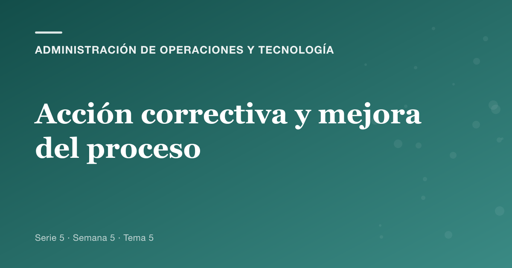
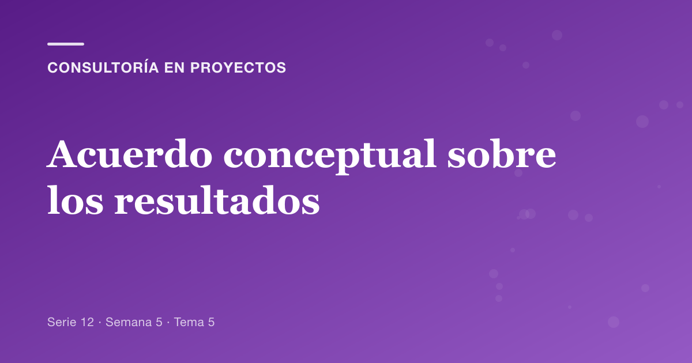
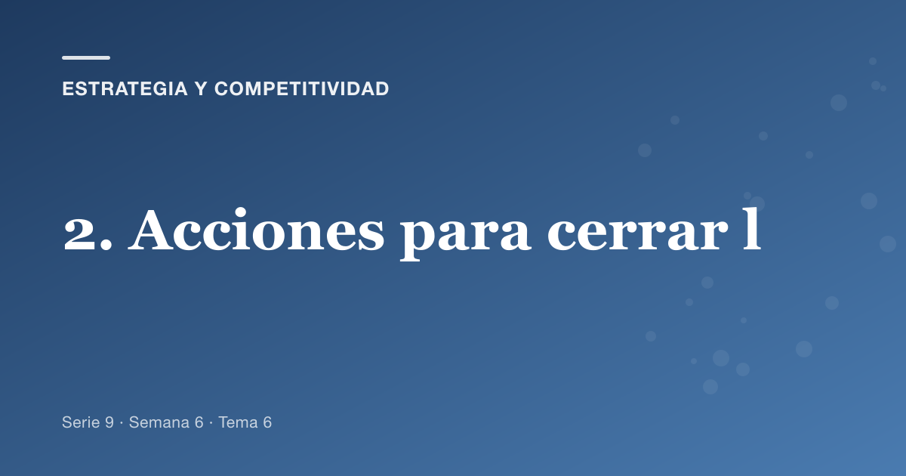
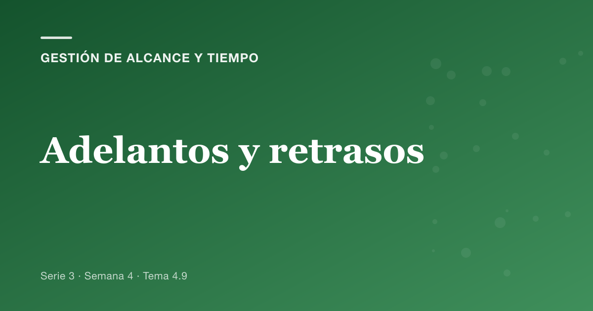
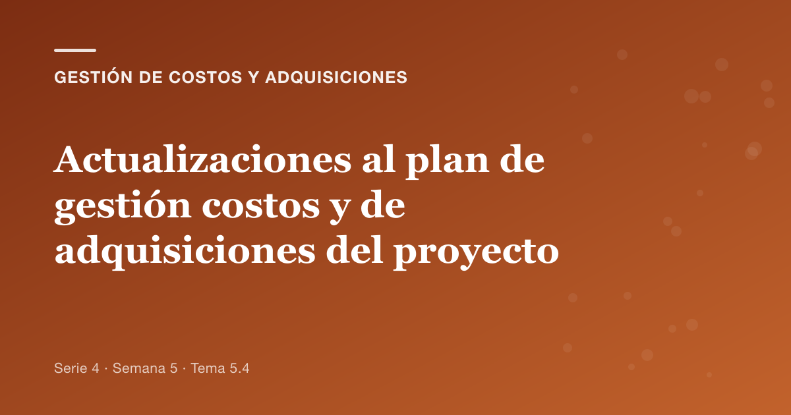
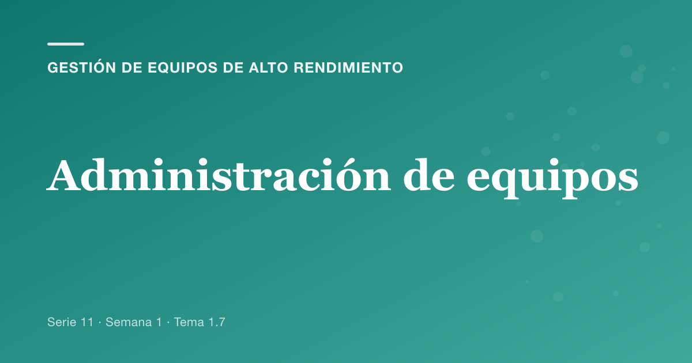
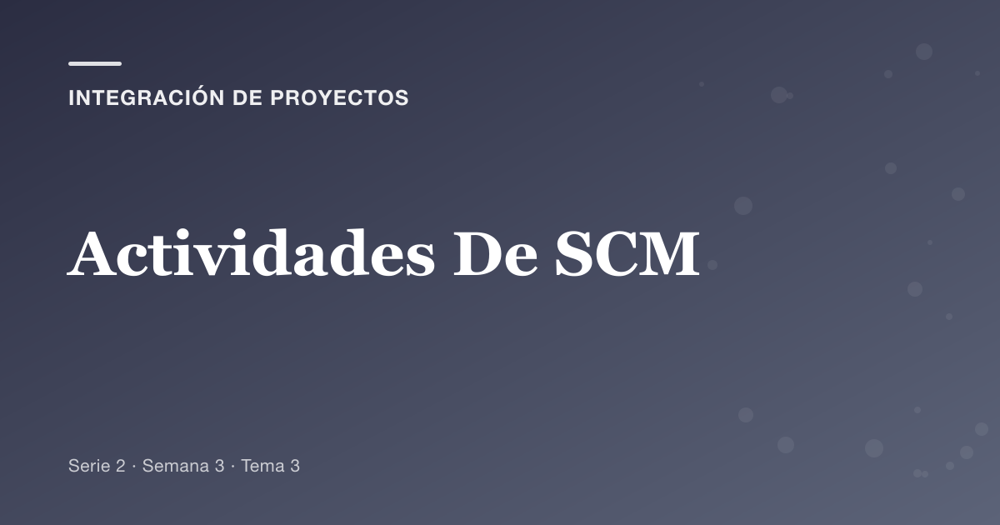
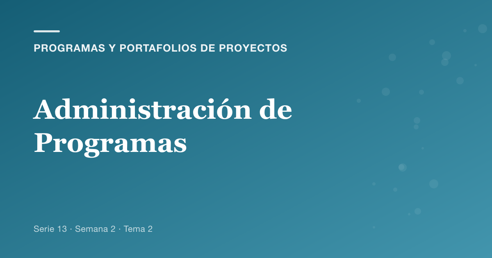
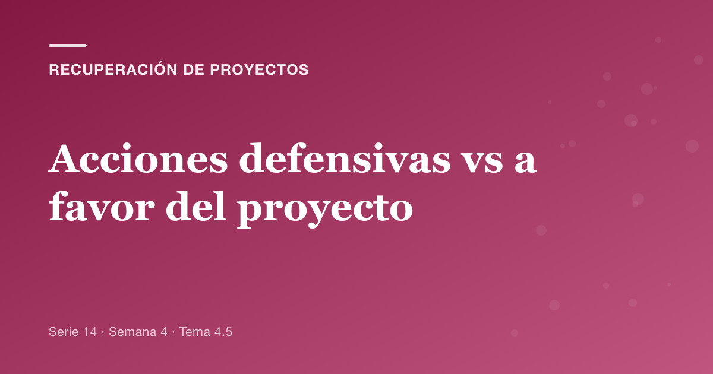

Portadas del blog de Dirección de Proyectos
811 portadas en 12 series, para
blog.soterramirez.dev.
Una muestra de cada serie.

administracion de operaciones y tecnologia — 81 portadas
alta direccion y liderazgo — 23 portadas
consultoria en proyectos — 82 portadas
estrategia y competitividad — 83 portadas
gestion de alcance y tiempo — 53 portadas
gestion de calidad y riesgos — 136 portadas
gestion de comunicaciones e interesados — 69 portadas
gestion de costos y adquisiciones — 76 portadas
gestion de equipos de alto rendimiento — 64 portadas
integracion de proyectos — 24 portadas
programas y portafolios de proyectos — 42 portadas
recuperacion de proyectos — 78 portadas